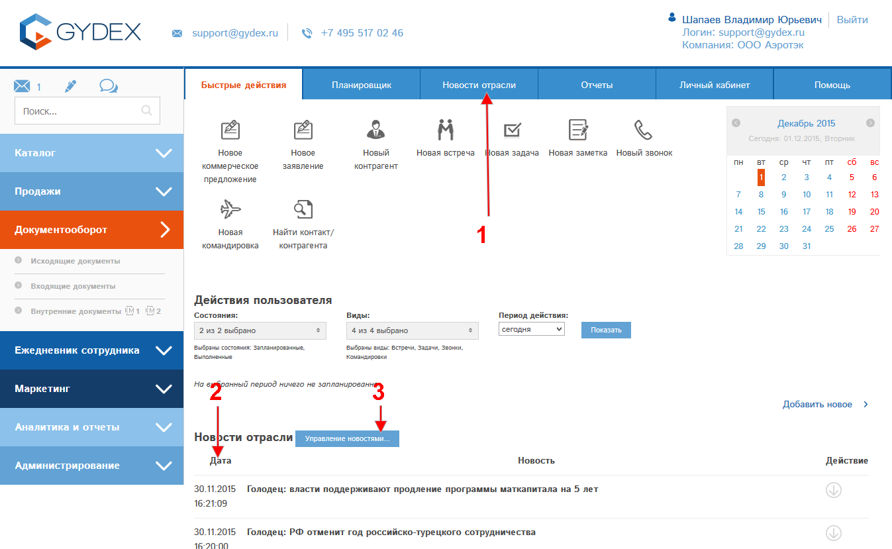
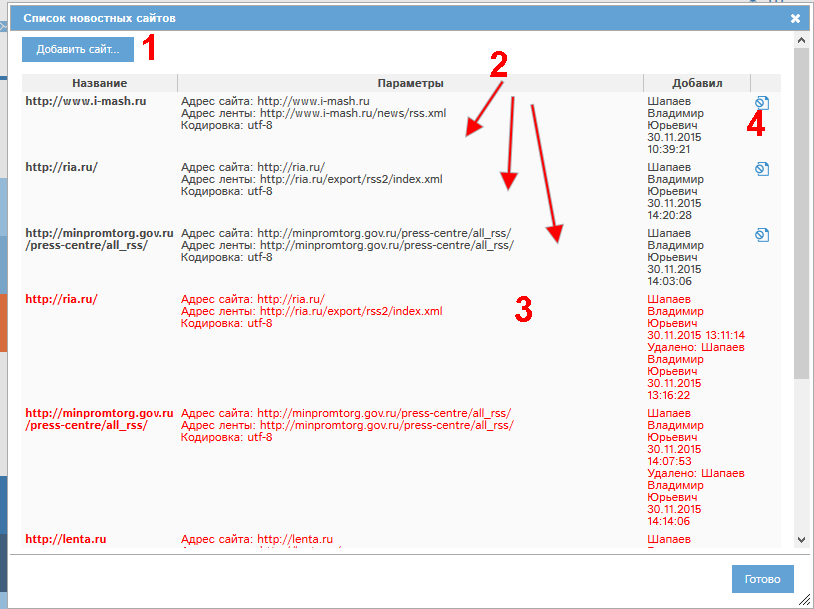
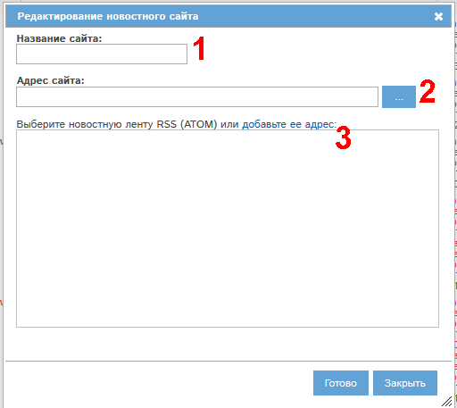
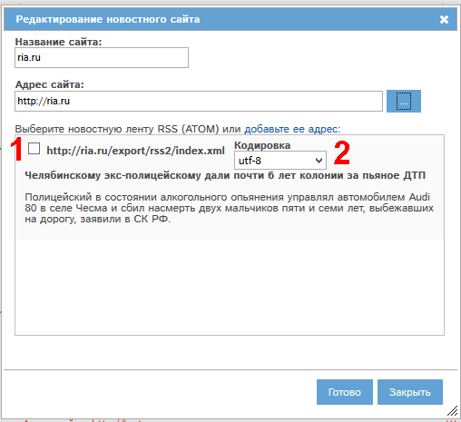
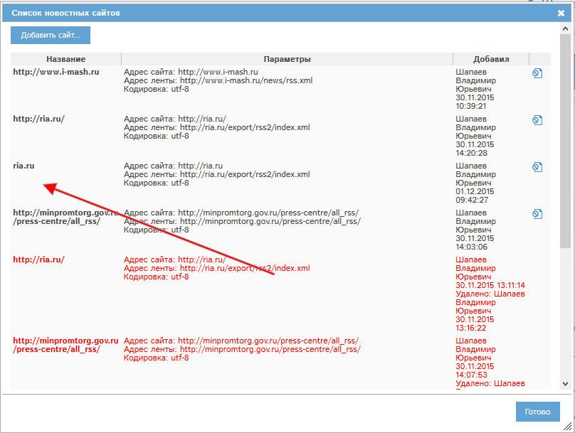

При наличии у Вас прав доступа Вам доступен раздел Новости отрасли.

Полный список новостей доступен в разделе "Новости отрасли" (1).
Последние новости доступны на странице "Быстрые действия" (2).
При наличии у Вас прав на управление новостями доступна кнопка "Управление новостями" (3). При ее нажатии откроется окно со списками источников новостей:

Кнопка (1) позволяет добавить сайт-источник новостей.
Активные источники новостей показаны в блоке (2). Неактивные (удаленные) источники показаны в блоке (3). Удалить источник новостей можно, нажав у соответствующего источника кнопку (4).
Рассмотрим добавление источника новостей. Нажмем кнопку (1). Откроется окно добавления новостного сайта:

В поле (1) необходимо указать название сайта.
В поле (2) необходимо указать полный адрес сайта. Нажатие кнопки "..." приведет к автоматическому поиску новостных лент в формате RSS или ATOM и показу их в блоке 3. Если вебмастера новостного сайта не прописали корректным образом адрес новостной ленты, но Вы его знаете, то нажмите ссылку "добавьте ее адрес" и впишите его.
Рассмотрим добавление сайта на примере http://ria.ru. Заполним поля 1, 2, нажмем "...":

Автоматически нашлась новостная лента. Для ее добавления в программу нужно отметить галочку 1. Если пример новости отображается некорректно ("иероглифами", "крякозябрами"), то необходимо выбрать другую кодировку в поле 2.
Лент может быть найдено несколько.
После завершения выбора одной или нескольких найденных лент нажмите Готово. Источник новостей будет добавлен в общий список:

После синхронизации новостей по графику программы новости из указанного источника будут появляться в разделе Новости отрасли и в периодической новостной рассылке программы.